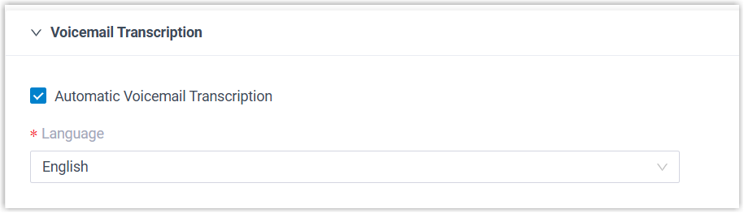
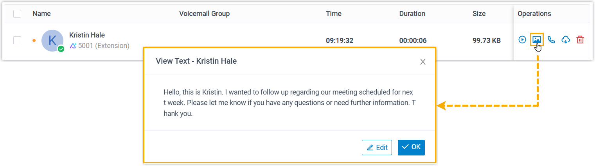
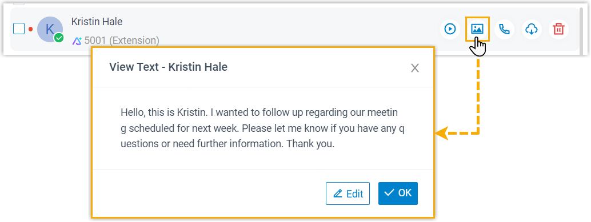
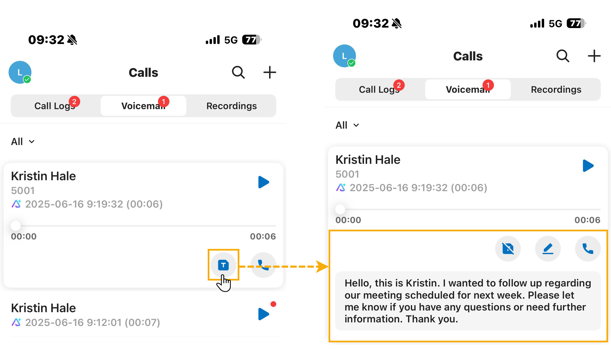
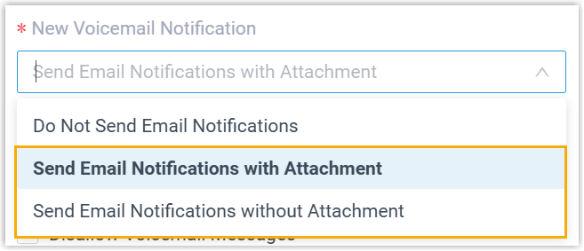

Configure AI Voicemail Transcription for an Extension
After AI voicemail transcription is enabled, voicemail messages for authorized extensions are automatically transcribed in a preset language. You can adjust the transcription settings for individual extensions to meet their specific needs.
Note: Extension users can also customize the AI voicemail
transcription settings directly within their Linkus clients, and the changes will be
automatically synchronized to the corresponding extension settings on the PBX. To
implement this, make sure that the Linkus clients meet the following
requirements:
- Linkus iOS Client: Version x.x.x or later
- Linkus Android Client: Version x.x.x or later
- Linkus Windows Desktop: Version x.x.x or later
- Links Mac Desktop: Version x.x.x or later
Prerequisites
You have enabled AI voicemail transcription and granted the extension permission to use this feature.
Procedure
- Log in to PBX web portal, go to .
- Click
 beside the desired extension, then click the AI
tab.
beside the desired extension, then click the AI
tab. - In the Voicemail Transcription section, configure the
following settings.

- Automatic Voicemail Transcription: Specify
whether to automatically transcribe voicemail messages for the
extension.
This option is enabled by default. If disabled, extension users need to manually trigger the transcription for specific voicemails on their Linkus clients when needed (Path: Voicemails).
- Language: Select the language in which the extension's voicemail messages will be transcribed.
- Automatic Voicemail Transcription: Specify
whether to automatically transcribe voicemail messages for the
extension.
- Click Save.
Result
- Messages delivered to the extension’s voicemail will be transcribed into
text in the specified language, either automatically or manually. Note: Messages from group voicemails in Shared by Members mode still follows the global transcription language setting (Set in ).
- Extension users can access the transcribed text through the following methods:
- Linkus UC Clients
- Users can view the transcribed text for each voicemail on
their Linkus UC Clients (Path:
Voicemails). The transcribed
voicemail messages are marked with an icon
 . Note: Users can edit or refine the texts by clicking Edit (for Web/Desktop Client) or tapping (for Mobile Client) to correct names, clarify information, or add personal notes for future reference.
. Note: Users can edit or refine the texts by clicking Edit (for Web/Desktop Client) or tapping (for Mobile Client) to correct names, clarify information, or add personal notes for future reference.Linkus Web Client Linkus Desktop Client Linkus Mobile Client 

 - The transcribed text is included in the body of the email
notification for each received voicemail. Note: This method is only available when the voicemail-to-mail feature is enabled for the extension (Path: ).
